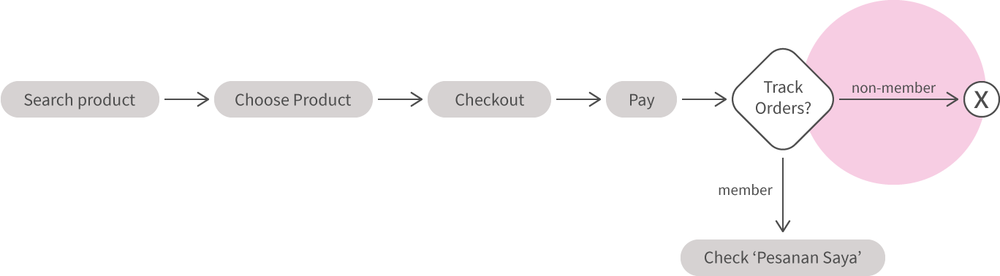
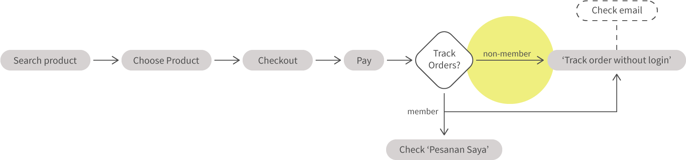
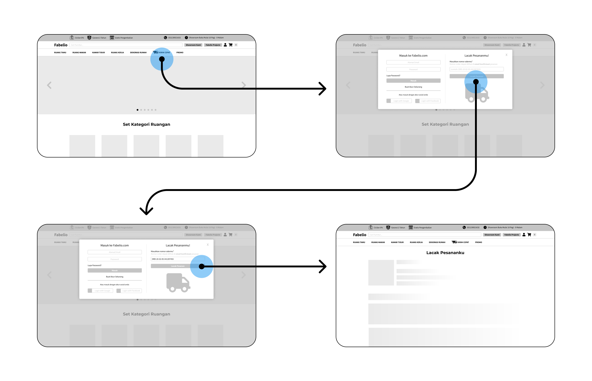

fabelio
This is a case study I did for an internship application test at Fabelio. I was pretty excited to get a hands-on experience in this area. I definitely still have a lot of room to grow, so hopefully there'll be more opportunities like this!
Tools : Figma
Time taken : ~6 hours
1 – Choosing People Problem
For this test, I was provided 3 cases to choose from. That is:
- Improve the the UX of the email subscription process.
- Revamp Fabelio’s “order saya” page.
- Build tracking order without login feature.
In order to decide which issue to solve, I wanted to understand the user’s experience. Therefore, I decided to interview 5 individuals on their experiences with e-commerce web apps. What I want to know is: Provided with those 3 cases, which one would be the most impactful in increasing their social interaction with a furniture e-commerce platform. And this is what I got:
80% of the interviewees said tracking order without login would increase their interaction, as an easier way to track the delivery status of their orders.
20% of the interviewees said email subscription would increase their Interaction because of convenience in time of need.
Then I delved into reading about Fabelio’s philosophy. They value the ease and comfort of their customers, along with their ability on being transparent. Therefore I decided to work on issue point 3—Build tracking order without login feature, because easing one of the customer’s anxieties is crucial in order to achieve Fabelio’s company goals in the long run. To see an even bigger picture, according to this article nearly 90% of the customers surveyed said they track the delivery status of their orders.
2 – Ideate
Of course what I am dealing with now is how do I build a tracking order feature without login, while still keeping the customer’s privacy and security. During the previous interview, 2 of them mentioned about tracking numbers. They said that a tracking order without login feature would be like checking delivery status using a tracking number on a courier website. Simple and easy. Moreover, they are already familiar with that user flow when ordering online.
Primary solution: Tracking numbers
Instead of adding a new attribute like a traditional tracking number, using order number as tracking number seems easier to implement. I noticed while I was brainstorming, that Fabelio already have a purchase without signup feature. Then how do they contact their customers? Through email and Whatsapp. So now, I have a contact channel for every purchasing customer on Fabelio whether they signed up or not.
Traditional Flow (tracking order only with login)

Proposed Flow

3 – Design Solution

View it on Figma here.
I went through some iteration of design solutions, and the wireframe above is the final version. I wanted the login form and the tracking order form to be displayed on the same page so that the users can find this feature faster. Also those two features being on the same page emphasize that users can track their orders without logging in first.